Arthur Ainsley King — The War Years
by Adrian King

Arthur King (1926–2013) was only 13 years old when the 2nd World War broke out in 1939. While his older siblings were involved in the war effort he was too young. However when he was old enough he became involved with the Verwood Local Defence Volunteers later to be known as the Home Guard.
One of the main jobs for the unit was to guard the Verwood Brick Yard — but what would the Germans want with the brick yard? A story from this time was that while on duty one night the wind was blowing strongly on some galvanised roofing. Every time it banged it frightened the life out of them all. When Arthur left school he had several jobs including working at the Verwood Brick Yard. He often related to his family the story of the flatulent horse that he used to walk behind while he was pulling a load up a local hill. He was also a driver’s mate.
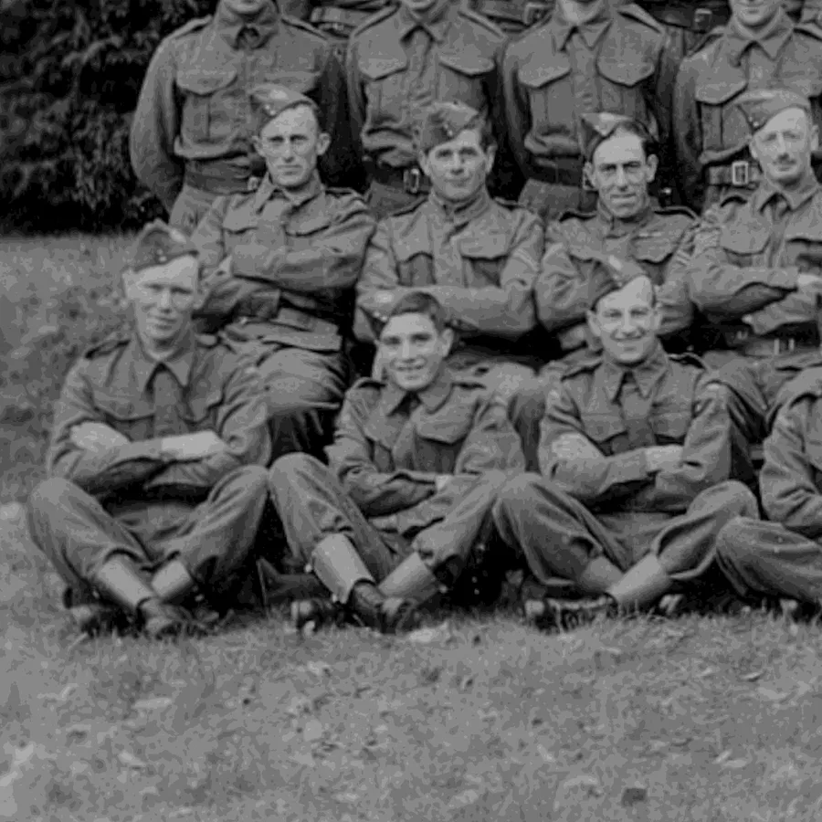
As soon as he was old enough he volunteered to join the Navy. At nearly 17½ years old on 18th November 1943 he commenced eleven weeks of basic training at HMS Collingwood at Portsmouth as a Boy 1st Class (HO). His Navy service was to be until 21st August 1947 and his service number was JX 630451 Meth.
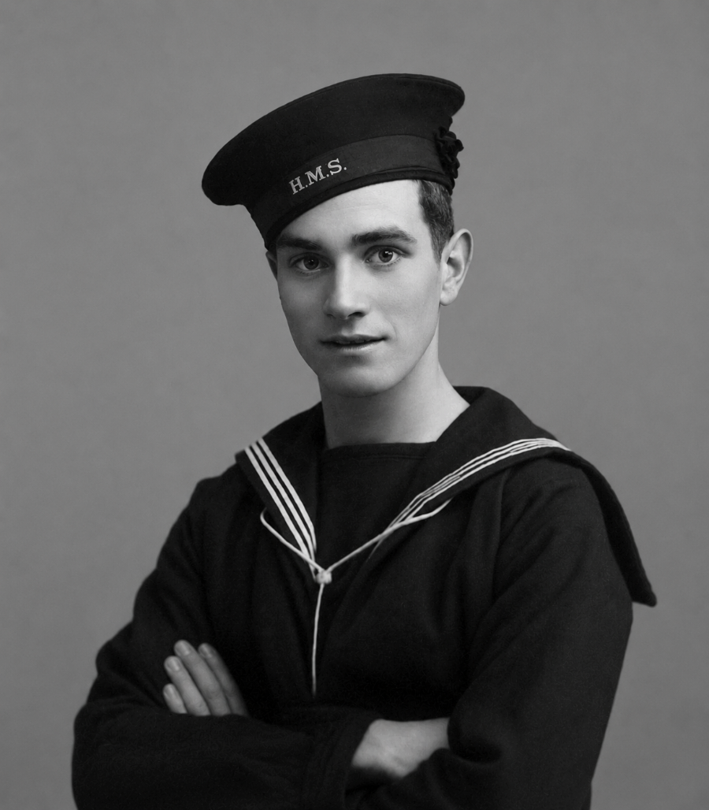
He became an Ordinary Seaman on 14th December 1943. Between 7th Feb 1944 and 14th April 1944 Arthur was transferred to HMS Victory waiting for a ship. HMS Victory was the Royal Navy Barracks in Portsmouth serving as an administrative unit.
HMS Trumpeter
In April 1944 an American Lease Lend escort carrier HMS Trumpeter underwent a refit to install British equipment including radar systems and modifications to the flight deck and hanger. Following the refit the ship conducted a work-up period to integrate the new systems and train the crew.
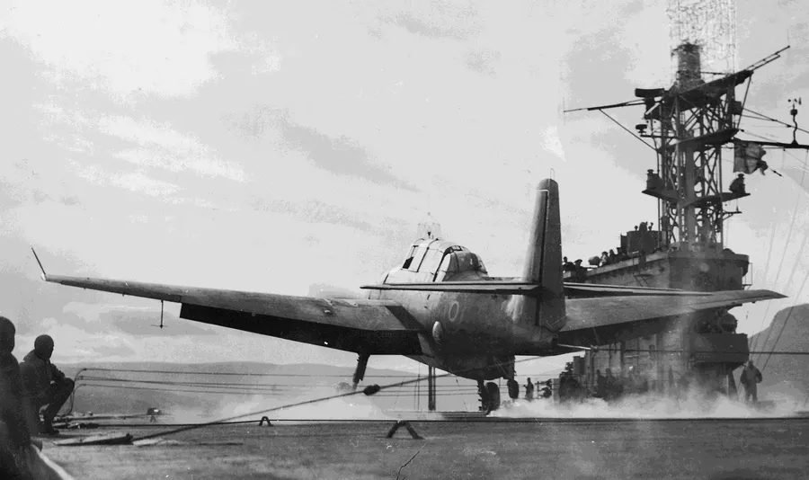
Arthur joined Trumpeter on 15th April 1944 and by his 18th birthday in June 1944 the ship had been allocated to the Home Fleet. The ship began operating with aircraft from 768 Deck Landing Training Squadron. Arthur became an Able Seaman on 14th December 1944 and passed his Qualified Deck Crew (Aircraft) exam on 1st Jan 1945 and then the Torpedo Reconnaissance qualification on 1st February 1945.
Arthur was involved in the Arctic Convoys to get supplies to the Russians at the end of the war and the ship was very busy. Arthur often related to his family that when he was in Scapa Flow, he found himself in the NAAFI which was not a place he would normally be. To his amazement a voice called out “Oy Kinger, what are you doing here?” A mate from Verwood was also there.
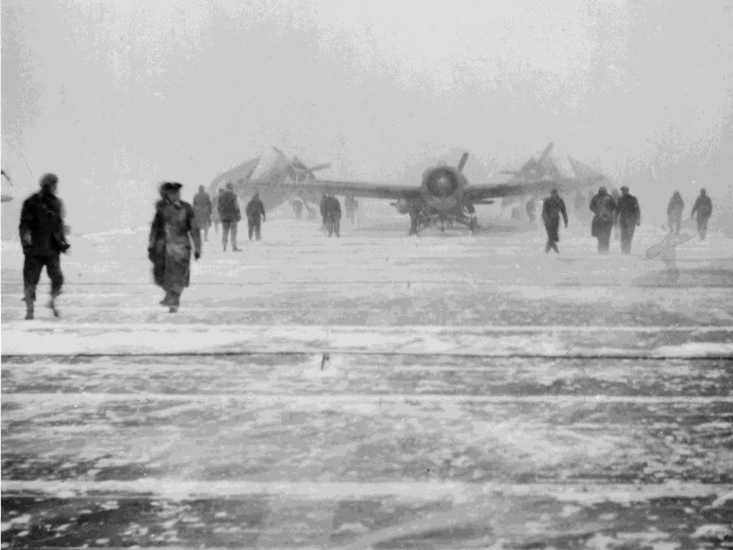
During the eighteen months that he was on Trumpeter he saw much action. Trumpeter took part in the following campaigns after joining the Home Fleet.
July 1944. On 5th July 12 Avengers and 4 Wildcats of 846 Squadron joined the ship. Operations took place off the Norwegian Coast including airstrikes and minelaying missions aimed at disrupting German shipping and Naval operations.
August 1944. Trumpeter escorted convoys JW 59 and RA 59A between the UK and Northern Russia in Operation Victual providing crucial air cover to protect against German U-boats and aircraft.
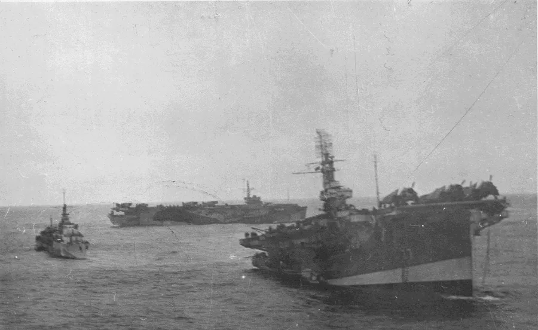
Late August 1944. Trumpeter participated in a series of attacks on the German battleship Tirpitz in Kaafjord, Norway in Operation Goodwood aiming to neutralize the threat it posed to Allied naval operations.
September 1944 to April 1945. Trumpeter continued the Arctic and Norwegian Operations. Over these months she was actively involved in multiple operations in Arctic waters and along the Norwegian coast including Operation Handfast in November which was an air-laid mine operation in the Salhusstrommen area south of Haugesund.
| Other operations during that period in 1944–45 | |
|---|---|
| Operation Begonia | Early Sept |
| Operation Tenable | Late Sept |
| Operation Lycidas | Mid Oct |
| Operation Hardy | Late Oct |
| Operation Urbane | Early Dec |
| Operation Lacerate | Mid Dec |
| Operation Fretsaw | Late Dec |
| Operation Sampler | Early Jan |
| Operation Spellbinder | Mid Jan |
| Operation Gratis | Mid Jan |
| Operation Charlton | Late Jan |
A boiler clean took place on the River Clyde between 5th February and 2nd March and Arthur may have had shore leave during this period. Afterwards there were two more operations. Operation Scottish escorting convoys JW 65 and RA 65 was in early March 1945 and Operation Newmarket in early April as the war in Europe drew to a close:
In May 1945 Trumpeter took part in an attack on the U-boat depot at Kilbotn, Norway as part of Operation Judgement. She contributed aircraft to a 44-aircraft assault that resulted in the sinking of several vessels including the depot ship Black Watch and U-711.
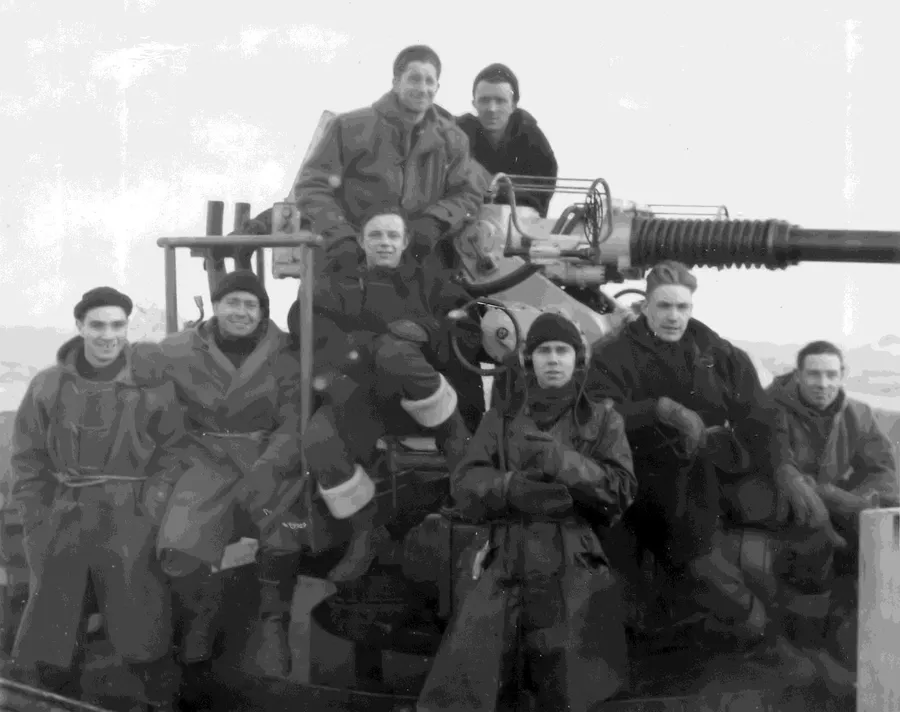
After VE Day on 8th May she took part in Operation Cleaver to sweep and clear German minefields in the Skagerrak and Kattegat between Norway, Sweden and Denmark.
Following the end of hostilities in Europe, Trumpeter arrived at the Clyde in May for a refit and was reassigned to the British Pacific Fleet. The ship set sail for Columbo, Ceylon on 7th July 1945 to support ongoing operations against Japan in the Far East.
After the War
With Japan’s surrender on 15th August 1945 Trumpeter’s role shifted from combat operations to post-war duties including troop transport and repatriation efforts. Trumpeter was allocated to participate in the reoccupation of Malaya in Operation Zipper.
During the period September 1945 to January 1946 Trumpeter was deployed for trooping duties within the East Indies area. The ship transported personnel and equipment between various locations in the region. The ship sailed from Trincomalee on 4th September and after a number of ports of call eventually arrived at Singapore 26th September. After No. 17 Squadron had disembarked Trumpeter returned to Ceylon arriving back at Trincomalee on 7th October 1945.
Trumpeter then sailed to
- Bombay arriving 6th November
- Singapore arriving 16th November
- Trincomalee arriving 23rd November
- Cochin arriving 9th December
She remained for the rest of the month at Cochin before returning to Columbo arriving 3rd January 1946.
Arthur left the Trumpeter on 3rd Jan 1946. He was stationed at HMS Mayina which was a Royal Navy shore establishment located near Colombo. It was used primarily as a transit and training camp for naval personnel especially those passing through the region during or just after the war.
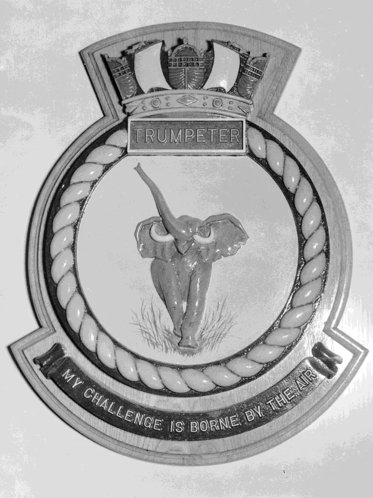
On 6th January 1946 HMS Trumpeter departed from Colombo for the United Kingdom sailing via the Mediterranean with stops at Bombay and Toulon. Her war service had ended.
HMS Glenearn
On 8th January 1946 after only four days at HMS Mayina, Arthur was transferred to HMS Glenearn which had been a Landing Ship, Infantry (Large) (LSI(L). She had been used during the war for amphibious operations especially supporting the D Day Landings in June 1944.
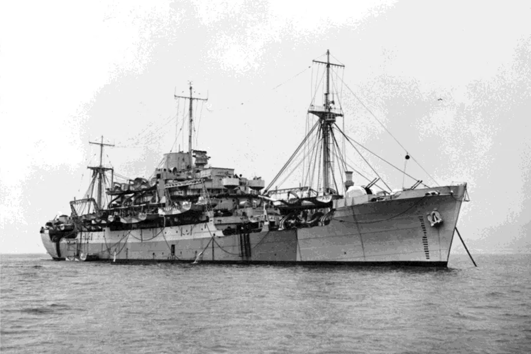
She sailed for Kure, Japan in late January 1946 arriving 1st February. Kure was only 25 km from Hiroshima. Her job was to serve as the Senior Naval Officers Establishment and provide accommodation for the Port Party tasked with establishing the British Commonwealth Occupation Force (BCOF). The task of the BCOF was to oversee demilitarization and reconstruction efforts after Japan’s surrender. When Glenearn’s task was completed Arthur transferred to HMS Commonwealth on 1st June 1946.
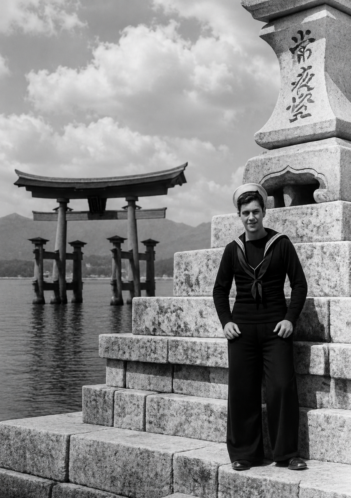
HMS Commonwealth was the Royal Navy shore establishment located in Kure. On 3rd June 1946 a Royal Navy shore party took control of the former Imperial Japanese Navy base at Kure commissioning it as HMS Commonwealth.
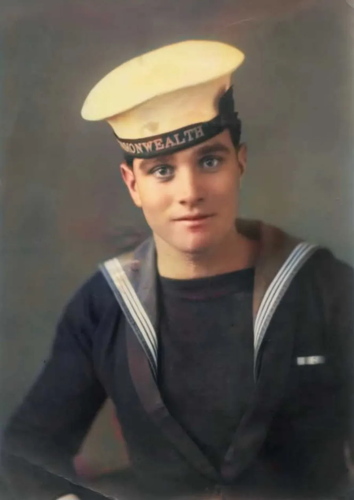
The daily routine on HMS Commonwealth would have been a mix of Shore Base Operations, Port Duties and Guard and Security. Too late now to know exactly what Arthur did on HMS Commonwealth, but it would have been a unique mix of naval routine, post war recovery work and cross-cultural experience. It would have been unlike anything that he had known during his service on Trumpeter.
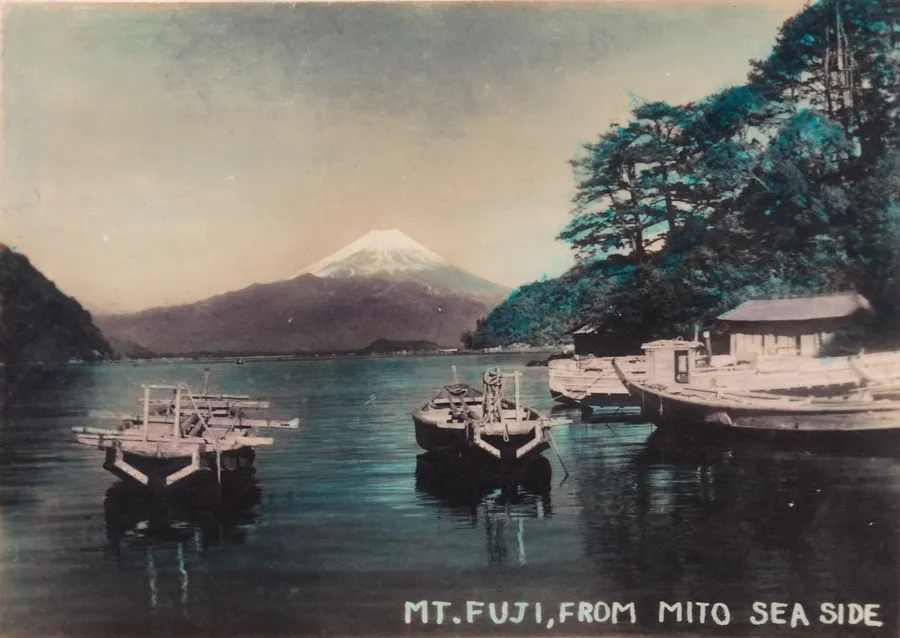
He was to remain there until the 9th March 1947 when he returned to the United Kingdom and HMS Victory again until he was demobbed on 21st Aug 1947.
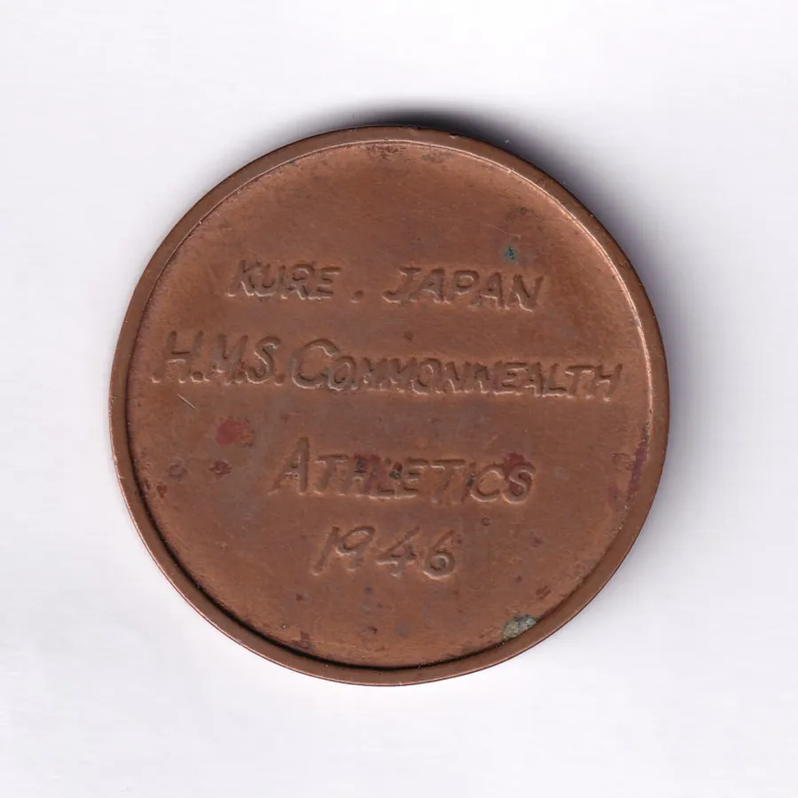
The Arctic Star
When it became available Arthur applied for the Arctic Star that recognised the risks that the sailors had taken in the harsh seas of the North Atlantic. The family received the medal after his death and his grandson James Emberley received it at a ceremony in Portsmouth on 27th June 2013.
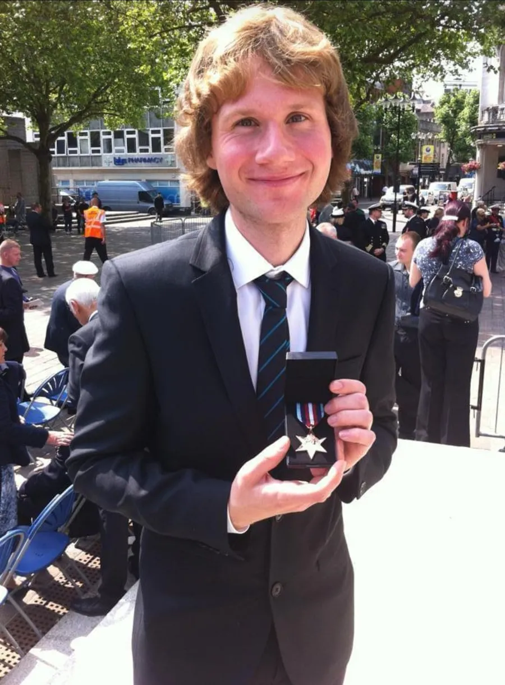